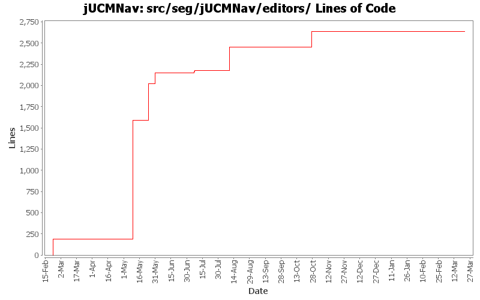

Summary Period: 2005-02-22 to 2006-03-21
[root]/src/seg/jUCMNav/editors
 actionContributors
(6 files, 1037 lines)
actionContributors
(6 files, 1037 lines)
 palette
(3 files, 518 lines)
palette
(3 files, 518 lines)
 tools
(5 files, 459 lines)
tools
(5 files, 459 lines)
 resourceManagement
(4 files, 571 lines)
resourceManagement
(4 files, 571 lines)

Total Lines Of Code:
2636 (2006-03-31 18:01)
| Author | Changes | Lines of Code | Lines per Change |
|---|---|---|---|
| Totals | 172 (100.0%) | 2636 (100.0%) | 15.3 |
| jkealey | 83 (48.3%) | 1980 (75.1%) | 23.8 |
| jfroy | 23 (13.4%) | 455 (17.3%) | 19.7 |
| etremblay | 57 (33.1%) | 201 (7.6%) | 3.5 |
| oclift | 1 (0.6%) | 0 (0.0%) | 0.0 |
| jpdaigle | 6 (3.5%) | 0 (0.0%) | 0.0 |
| jmcmanus | 2 (1.2%) | 0 (0.0%) | 0.0 |
Bug 381: 3.1: remove extra items from contextual menus
(forgot to commit GRL)
0 lines of code changed in:
Bug 381: 3.1: remove extra items from contextual menus
0 lines of code changed in:
bug 382: getting rid of: org.eclipse.ui.PartInitException: Warning: Detected recursive attempt by part seg.jUCMNav.MainEditor to create itself (this is probably, but not necessarily, a bug) a
0 lines of code changed in:
0 lines of code changed in:
Merge of GRL branch with the main trunk
0 lines of code changed in:
Merge grl branch with the main trunk
Major modification of the metamodel (URN_08.mdl) (Added GRL metamodel, New interfaces that define common element in GRL and UCM, Modified UCM-Map package to implement the new interfaces (some associations and attributes have been refactored using the interfaces), Map is now called UCMmap (to resolve conflict with java.util.map in the implementation), Removed Path Graph)
Modification of the code that used the metamodel.
Started modification of jUCMNav to support GRL.
184 lines of code changed in:
added graphical overview in outline; according to my tests, it should be okay but needs to be tested more extensively
0 lines of code changed in:
Fix references to RessourceTrackers and fix the problem with the new editor option (in Eclipse 3.1)
0 lines of code changed in:
bad includes.
0 lines of code changed in:
Fix code to support UrnEditor
0 lines of code changed in:
Added the editor superclass UrnEditor, to implement others urn editors used in the MultiPageEditor.
0 lines of code changed in:
Added the editor superclass UrnEditor, to implement others urn editors used in the MultiPageEditor.
271 lines of code changed in:
bug 388 - property sheet used first page's command stack instead of DelegatingCommandStack.
0 lines of code changed in:
bugs 372 - 378 - 380 - 379 - 273 - 375 - massive changes in deletion command infrastructure. mainly refactoring but also various functionality additions
also committing minor changes to the twiki plugin created by JFRoy and an ant script to generate javadoc on a windows machine.
0 lines of code changed in:
Small bug fix. RespView now update correctly when you switch between editors and when you close them.
The view will update when you add a new map.
0 lines of code changed in:
bug 359 - had forgotten to set new maps to current mode;
fixed bugs in ET's resp view that sometimes made the app crash
fixed a few javadoc tags
0 lines of code changed in:
Selection synchronizing between resp view and the editor.
0 lines of code changed in:
bug 359 - mode now affects all editors;
undiscovered regression bug - stub labels sometimes didn't move;
cleaned&commented (javadoc) seg.jUCMNav.editparts;
moved remaining stub code from PathNodeEditPart to StubEditPart;
moved remaiining condition code form LabelEditPart to ConditionEditPart
0 lines of code changed in:
various issues brought up by Gunter
0 lines of code changed in:
added javadoc for seg.jUCMNav.editors and seg.jUCMNav.editors.resourceManagement. Moved outline to seg.jUCMNav.views.outline package.
18 lines of code changed in:
(66 more)
Generated by StatCVS 0.2.4